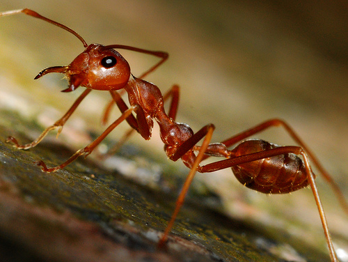

Many of you may be afraid of shark attacks. Don't be. More people die from coconuts falling on their heads than from sharks. The lesson to be learned: Don't sit under palm trees if they have fruit. Some of you may be frightened by bears and their enormous claws. Don't be. Only 2 people die from bear attcks in the United States per year. And those 2 people were probaby idiots. Instead, allow me to strike fear into your hearts by a much more prevelant danger: ants. Though seemingly nonthreatening, ants are very dangerous insects.

12 people die from ants in the United States per year. That is an incredibly scary number given that not all ant-related deaths are reported and that is just an average. Just imagine you are in your garden, minding your own business when a pack of vicious ants comes and begins biting you all over. You try to get them off but more and more keep coming until you're completely covered in ants. You manage to get ahold of your cell phone and call 911 but the firefighters and police and ambulance just laugh because they are ignorant to the iminent threat of ants. When you finally get somebody to take you seriously, an ambulance comes and hoses you off with a hose. You are completely red with ant bites. The ambulance takes you away to the hospital where you are given pain mediction and antibiotics. Two days later you die from the slighly venomous fire ant bites. See? It's scary. It's horrifying. Though fire ants are only slightly venomous they can kill if they bite you enough time. Ants often attack in groups and not alone. The biggest colony of ants in the world had about 306 million ants in it! Remember Bears and sharks and falling coconuts are nothing of a threat in comparison to ants. This has been a warning. Good luck.